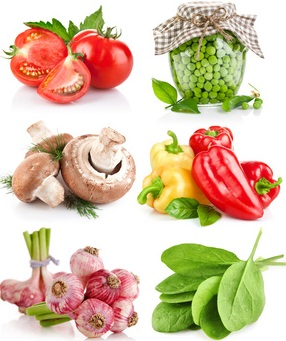

Витамины
Витамины являются биологически активными органическими веществами растительного и животного происхождения.
Свое название они получили от латинского слова "vita" жизнь и "amine" белок. Буквы алфавита присваивались витаминам по мере открытия. Названия некоторых из них имеют помимо буквенных обозначений словесные, к примеру, витамин А известен еще и как "ретинол".
Только в 20 веке в 1911 году витамины были впервые выделены в чистом виде польским исследователем Казимиром Функом. В настоящее время известно их несколько десятков, 21 из них продуцируется и используется в целях профилактики и лечения.
Роль витаминов в питании
Витамины принимают участие в важнейших процессах жизнедеятельности человеческого организма:
- влияют на рост и развитие;
- регулируют обмен веществ, биохимические процессы извлечения энергии из пищи;
- защищают от болезней и вредных факторов окружающей среды: воздействия радиации, климатических условий, промышленных токсинов, ядохимикатов и т.д.;
- существенно влияют на степень умственной и физической работоспособности.
Недостаток витаминов в организме
Дефицит витаминов оказывают влияние на состояние здоровья, ума и сохранение молодости больше, чем какие-либо иные факторы. Фактически все заболевания начинаются с наличия недостаточного количества того или иного витамина.
Недостаток витаминов в организме приводит к следующим последствиям:
- снижению работоспособности и сопротивляемости простудным заболеваниям;
- развитию сердечнососудистых патологий;
- ухудшению течения любых болезней, замедлением выздоровления.